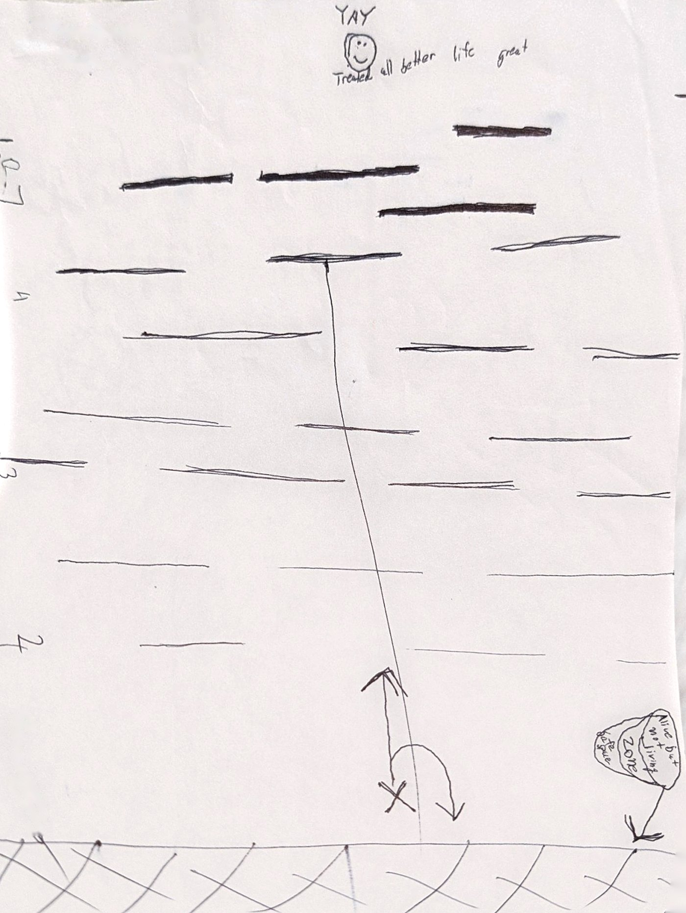

The story behind the song
It started as a drawing.
Nobody can tell you how hard it is to get better. This drawing was made to explain it when the words weren't working. It's a picture of depression, and of trying to walk out of it, and you don't have to be a veteran to recognize it. One page: a figure at the bottom, a path going up, and lines across the path.


Every line is a wall of glass. The thin ones break with a push. The thick ones don't break at all. None of them can be seen. You find out which kind you've hit by hitting it, and the only thing you have to swing is what you were given.
The X's at the bottom are where you start, and where you land when a wall doesn't give. Look at the sign planted there. It says "safe zone" first, and then, written over it: alive but not living zone. It isn't safe. It's quiet. Nothing hurts down there and nothing moves. You can breathe, and that's about all you can do. The song's name for it became the hook.
I don't live there.I only breathe there.So I'm walking back in.
from I Can't See the Glass
The further up the path, the thicker the glass, and a wall that holds doesn't just stop you. It throws you all the way back down, and the fall is worse than the wall. Everyone's walls are a different thickness. Nobody can tell you yours.
At the top of the page there's a smiley face with the words next to it: treated, all better, life great. It's written the way you'd write a dare.
What the glass is
The bridge says it plainly. The glass is everything that happened, and everything you saw that you can't put down. Get through one wall and there may be another behind it. Or there may not. Nobody can tell you that either.
Every wall's a different thickness,and nobody can tell you that.
from I Can't See the Glass
Why you walk anyway
You don't know what's at the top. Maybe it's more glass, maybe it's not. Something in you won't stay down, and in the song it's the same thing that brought you home. So the last line isn't a promise. It's a decision.
I don't know if it's better.I'm walking anyway.
from I Can't See the Glass
If you recognize the X's: Veterans Crisis Line, dial 988, then press 1, or text 838255. Any hour, no appointment, no enrollment needed.
From the page to the song
Every line in the song points at something on the page. A few of them, side by side.
- On the page
- In the song
- A figure at the bottom, and a path going up.
- Hands out in the dark,counting steps like I was taught
- A thin line across the path.
- The first one goes like a windowpane.One push and it's gone.
- A thick line, further up.
- The next one doesn't make a sound.No crack, no give, it just holds.
- The X's, and the sign: alive but not living zone.
- I don't live there.I only breathe there.
- The tools you were given, and nothing else.
- What they issued me fits in one hand.I can't see what I'm swinging at.
- A smiley face at the top of the page.
- Nobody can tell you what's on the other side.I've asked.